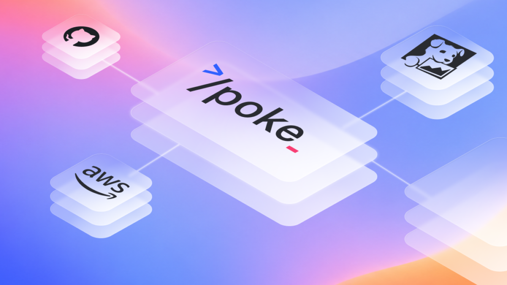

The Unreasonable Effectiveness of a Single Agentic Command for Operating Cloud Infrastructure
A solutions engineer is onboarding a new customer. Before the kickoff call, she runs
/poke "validate detection pipeline health for customer-z. Are logs flowing, are all connectors healthy, any detection gaps?". In two minutes, poke checks ingestion rates across every connector, confirms detection rules are active and firing across all sourcetypes, and flags a gap: a misconfiguration in the customer’s Entra ID connector means sign-in logs are flowing but audit logs aren’t. She sends the customer’s IT team the exact Azure AD configuration change needed, and by the time the SRE runs the final onboarding sign-off, everything is already clean.
She didn’t need to know which ClickHouse tables store Entra audit events or how the detection scheduler partitions by sourcetype.
/poke surfaced the gap, explained why it mattered, and pointed to the fix.
This is what we built — refined through six months of daily production use and hundreds of iterations.
/poke is a single Claude Code command that has become our team’s AI-SRE: a digital imprint of our engineers’ operational knowledge. It encodes how they think about our architecture, which systems to check first for a given symptom, what common operational patterns look like, and how components interact. Claude then multiplies that knowledge by actually executing on it — running queries, reading logs, writing ad-hoc analysis scripts, correlating data across a dozen systems simultaneously. Like having your most experienced SRE always available, but one who can write a complex data analysis pipeline in seconds when the investigation calls for it.
Why did we call it /poke?
It all started when we noticed Claude was surprisingly good at searching through AWS CloudWatch, so we called it
/aws-debug. But once we started adding support for other systems, it was clear the tool had outgrown that name. We needed something short, something fast to type and easy to say, because we’d be doing both constantly. Back then (and still now!) our team’s favorite lunch was the poke bowl joint around the corner from the office, and “poke” also happened to be exactly what the tool does: prod at systems until they give up their secrets. So/poke(pronounced po-keh) it was.
What /poke actually does
/poke ties together every system we use to run our infrastructure: our cloud provider’s logging (and container/service logs), our observability stack (metrics, traces, profiling), our analytical database internals for performance, our cloud control plane/CLI for resource state, our CI/CD system for deploy history and code review context, our application databases for detector state and execution history, our internal knowledge base/runbooks, our feature-flag/configuration store, and the source code itself.
The power is in the correlation. The specific examples below show this better than a list ever could, but the short version is: when Claude can see your deploy history, your logs, your database internals, your metrics, and your source code all at once, it makes connections that would take a human engineer 30 minutes of cross-referencing across systems.
Four examples from recent use
Rapid detection rollout for a new threat
A new supply chain attack makes the news. Our detection engineering team validates the set of detections automatically built by Artemis based on published techniques and indicators, covering the attack chain across multiple log sources — an AI-assisted workflow that gets us from disclosure to production-ready detections within minutes. After validation is completed, the detections ship to production. As a final check, the lead engineer runs: /poke "we just deployed 6 new detection rules for CVE-2025-XXXX. Validate they're working end-to-end across all customers"
Claude traced each rule through the entire pipeline:
- Queried RDS to confirm all six rules were active, correctly configured, and assigned to the right customer segments.
- Checked ClickHouse to verify the underlying log data each rule depends on was present and fresh for every customer — one rule required DNS logs that two customers weren’t ingesting yet, which Claude flagged.
- Pulled CloudWatch logs for the detection scheduler Lambda to confirm all six rules were being picked up on schedule and executing without errors.
- Queried Datadog metrics to validate execution latency was within normal bounds — no rule was approaching timeout thresholds even on the largest customer’s data.
- Sampled early results from the execution history in RDS to confirm the rules were producing well-formed findings, not empty results or malformed output.
Four systems, six rules, all customers, validated in under three minutes. Our production monitoring would surface any issues eventually, but
/poke gives the detection engineer immediate end-to-end confidence without waiting for alerts to fire or pulling an SRE into the loop. An extra layer of verification, right at the point of deploy.
ClickHouse query optimization audit
As part of a periodic performance review, we wanted to identify which query patterns were consuming the most ClickHouse cluster resources and whether any were candidates for optimization.
Command: /poke "audit ClickHouse query performance, identify top resource consumers and optimization candidates"
Claude wrote and executed an ad-hoc Python script on the fly that:
- Queried the ClickHouse query log for the past hour across all cluster nodes.
- Aggregated by query pattern (normalizing out specific parameter values), computing p50/p95/p99 durations, total CPU time, and memory usage.
- Filtered out the noise (short queries, system queries, one-off ad-hoc queries).
- Ranked by total cluster impact (duration × frequency) and formatted it into a clear report.
- Cross-referenced the top offenders with our detection rule definitions to identify which rules were responsible.
This is a class of problem where the data exists but the analysis is non-trivial. An experienced engineer could write this script, but it would take an hour or two to get the query right, handle edge cases, and tune the aggregation. Claude does it in seconds — writes the script, executes it, tunes it, and delivers a finished analysis. It unlocks investigative depth that simply wasn’t practical when every deep-dive required hand-crafted tooling.
Proactive cost optimizations across AWS accounts
We manage infrastructure across multiple AWS accounts and wanted to dig into details of our AWS billing. Cost Explorer showed useful data but it was hard to pinpoint the underlying cost drivers.
Command: /poke "break down our AWS data events costs and find optimization opportunities"
Claude analyzed:
- Queried AWS Cost Explorer APIs to isolate costs by service, account, and usage type.
- Identified a CloudTrail data event trail collecting at a higher granularity than our detection pipeline required.
- Provided the exact configuration change and projected the annual savings at $700K.
Time to actionable recommendation: 30 seconds. The same analysis manually would have required pulling cost breakdowns, correlating them against infrastructure configurations, and estimating the impact of each change — routine work, but the kind that sits in a backlog because it takes a focused afternoon to do well.
Load testing ahead of large customer onboarding
We were preparing to onboard a customer with significantly higher usage than our existing baseline. As part of pre-launch validation, we ran:
Command: /poke "run a load test against the portal at 10x our current peak traffic and flag any resource concerns"
Claude’s investigation:
- Ran the load test and spotted a sawtooth memory pattern in ECS Container Insights — memory climbing steadily under sustained traffic, consistent with unbounded allocation.
- Pulled Datadog continuous profiler data for the portal service and identified memory allocation dominated by a specific query handler.
- Correlated with distributed traces to find the highest-memory requests were all hitting the same database query, loading large result sets into memory.
- Read the source code for that handler and identified it was fetching unbounded results instead of using server-side aggregation.
Time to diagnosis: 90 seconds. Without /poke, it would have involved an engineer pulling data from four different systems over several hours. /poke compressed that into a single command and a clear chain of evidence from symptom to root cause. The fix shipped the same day.
One command that knows the whole system
A popular approach in the Claude Code / agentic tooling world is to build separate skills for each system: a skill for querying your database, a skill for Datadog access, a skill for Notion, and so on. We went the other direction. One command, one prompt, one unified view of the entire system.
The reason is simple: the most interesting debugging happens at the boundaries between systems. A capacity planning question requires understanding deploy frequency, current query load, database growth trends, and scheduler throughput — all from different systems. No single-system skill can connect those dots. But a single command that understands the full architecture can, because it has the context to connect the dots.
The /poke command is about 1,300 lines of Markdown. It reads like a conversation with a senior engineer explaining how our system works and how to debug it. There’s an architecture diagram showing data flow between all our components. There are diagnostic command templates for each system we use. There’s triage logic so Claude knows when to give a quick answer vs. run a deep investigation. And there are patterns we’ve learned from real incidents, like “if ingestion latency spikes but query performance is flat, check the writer service before the database. It’s usually a buffering configuration, not a storage bottleneck.”
The architecture diagram has been one of the highest-value additions. Think about what happens when an experienced engineer debugs something: they have the whole system topology in their head. They know which component feeds into which, what the data flow looks like, where the bottlenecks tend to be. Putting our architecture diagram directly into the /poke prompt gives Claude that same mental model. It can reason about why data might be delayed by tracing the flow from ingestion through processing through storage. It can figure out which Lambda to check logs for based on where in the pipeline the problem likely is. It knows which services are written in Rust vs. Python, which matters when you’re reading stack traces. This kind of ambient architectural awareness turns Claude from a tool-runner into something closer to a team member who actually understands the system.
Custom scripts over MCP servers
We deliberately chose not to use MCP servers for external system access. Instead, we wrote thin wrapper scripts, typically 30-80 lines of bash or Python, that handle authentication and simplify API interactions.
For example, here are some of the scripts /poke uses:
<code>query_logs.sh # Datadog logs search
query_traces.sh # Datadog distributed traces
query_timeseries.sh # Datadog metrics over time
setup_credentials.sh # Auth from Secrets Manager
ch_query.py # ClickHouse queries
run_gh_cmd.sh # GitHub CLI wrapper
run_notion_cmd.py # Notion API access</code>Code language: PHP (php)Each script is deliberately minimal — authentication, request construction, clean output. The intelligence lives in Claude’s reasoning, not in the tooling layer.
Why not MCP? Mainly because of the tight feedback loop. The real value isn’t in the scripts themselves, it’s in the usage guidance that surrounds them. We continuously tune the prompt examples around each script based on daily observations of how /poke performs. For Datadog, we’ve tuned the query syntax examples to match our specific tagging conventions. For CloudWatch, we’ve refined guidance on when to use CloudWatch Insights vs. simple log tailing vs. grep-based filtering, based on watching which approach works better for our specific log volumes and patterns. When something doesn’t work well, we tweak the prompt or the script in minutes. With a third-party MCP server, that feedback loop doesn’t exist. You’re stuck with whatever abstractions and defaults the server provides.
Be intentional about what’s in context vs. referenced
A popular approach with Claude Code skills is to keep prompts lean and let the LLM load additional context on demand through skills, plugins, or file reads. We found that for many use cases, putting more information directly into context produces noticeably better results. Not everything belongs in context, but we’re not shy about including even non-trivially large chunks of information when it helps.
We think about it in three tiers. The first tier is always in context: the architecture diagram, diagnostic command templates, triage logic, and cross-system correlation patterns. About 1,300 lines that Claude has on every single invocation. The second tier is loaded on demand: detailed step-by-step workflows for specific subsystems that Claude reads when the investigation goes deep. The third tier is fully delegated: complex workflows like cost analysis or health checks that have their own separate commands.
The architecture reference is the clearest example of why direct context matters. When we first built /poke, the architecture lived in a separate file. Claude would sometimes load it, sometimes skip it to save context, and the inconsistency led to less reliable architectural reasoning. Moving it directly into the command eliminated an entire class of errors. This makes intuitive sense: your best engineers always have the architectural picture in their head when they’re debugging. They don’t stop to look up which service talks to which database. That ambient knowledge shapes how they approach every problem. /poke works the same way.
We prune /poke regularly to keep it lean, but we optimize for accuracy and usefulness over token count. The context window is large enough that our current size is comfortable, and over-optimizing for token count would be wasted effort compared to just making sure the content is accurate and useful.
What we’ve learned after six months
It compounds. Every time we encounter a new diagnostic pattern — whether it’s a capacity planning question, a performance optimization, or a configuration audit — we encode it into /poke. Six months of daily use and hundreds of refinements means the command handles most scenarios we encounter, and provides useful starting points for new ones using the architectural context.
Speed rules matter. We added explicit speed constraints (“present findings within 90 seconds”, “max 2-3 commands before speaking to the user”) after noticing Claude would sometimes run exhaustive investigations when a quick answer was all we needed. The triage categories (quick lookup vs. targeted investigation vs. deep analysis) were essential for making the tool feel responsive.
The development process matters as much as the design. The loop is simple: use, observe, improve. We use /poke many times a day, observe where it excels and where it falls short, and iterate many times a week. If a new diagnostic pattern works well, it goes in. If something stops being useful, it comes out.
It does more than the simplicity of its components would suggest. Claude’s ability to reason, correlate, and execute, combined with well-structured access to your actual systems and your team’s accumulated operational knowledge, produces something far greater than the sum of its parts.
This post draws from our experience at Artemis, where we build an AI-native protection platform. We use Claude Code extensively across our engineering workflow.